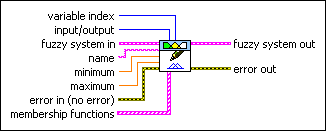
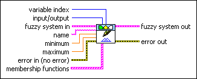

FL Set Variable VI
Owning Palette: Variables VIs
Requires: Full Development System
Modifies the name, range, or membership functions of a linguistic variable in a fuzzy system.

 Add to the block diagram Add to the block diagram |
 Find on the palette Find on the palette |
Owning Palette: Variables VIs
Requires: Full Development System
Modifies the name, range, or membership functions of a linguistic variable in a fuzzy system.

| Add to the block diagram |
Find on the palette |
 |
variable index specifies the index of the linguistic variable whose information you want to modify. variable index corresponds to the order in which the linguistic variable was created. | ||||
 |
input/output specifies whether the linguistic variable corresponding to variable index is an input or output variable.
|
||||
 |
fuzzy system in specifies the complete information for a fuzzy system. Wire the fuzzy system out output from another VI to the fuzzy system in input of this VI. | ||||
 |
name specifies the name of the linguistic variable. | ||||
 |
minimum specifies the minimum value of the linguistic variable. | ||||
|
maximum specifies the maximum value of the linguistic variable. | ||||
 |
error in describes error conditions that occur before this node runs. This input provides standard error in functionality. | ||||
|
membership functions specifies the membership functions for the linguistic variable. | ||||
 |
fuzzy system out returns the complete information for a fuzzy system. Wire this output to the fuzzy system in input of another VI. | ||||
 |
error out contains error information. This output provides standard error out functionality. |